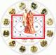
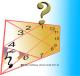
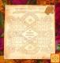

| मूहूर्त | |
|---|---|
 |
मूहूर्त के अनुसार विवाह में वर्जित काल (Prohibited Duration For Marriage in Muhurutha)वैवाहिक जीवन की शुभता को बनाये रखने के लिये यह कार्य शुभ समय में करना उतम रहता है. अन्यथा इस परिणय सूत्र की शुभता में कमी होने की संभावनाएं बनती है. कुछ समय काल विवाह के लिये विशेष रुप से शुभ समझे जाते है. इस कार्य के लिये अशुभ या वर्जित समझे जाने वाला भी समय होता है. जिस समय में यह कार्य करना सही नहीं रहता है. आईये देखे की विवाह के वर्जित काल कौन से है |
 |
Muhurat in our daily life - मुहूर्त विचारआम भाषा में हम जिसे शुभ और अशुभ समय कहते हैं ज्योतिषशास्त्र की भाषा में वह समय ही मुहूर्त कहलाता है.ज्योतिषशास्त्र कहता है किसी भी कार्य की सफलता की आधी गारंटी तभी मिल जाती है जब कोई कार्य शुभ मुहूर्त में किया जाता है.यही कारण है कि हमें जीवन में मुहूर्त का ध्यान रखकर कोई कार्य शुरू करना चाहिए |
 |
यात्रा का मुहुर्त-1 - नक्षत्र, तिथि, करण एवं वार विचार - Muhurta for journey - Nakshatra, Tithi, Karan and Var vicharमनुष्य विभिन्न उद्देश्यों और कार्यों से जीवन में समय समय पर यात्रा करते। जब हम किसी विशेष उद्देश्य या कार्य से यात्रा करते हैं तो हमारी अपेक्षा रहती है कि जिस प्रयोजन मे हम यात्रा कर रहे हें उसमें हमें सफलता प्राप्त हो। |
दुकान खोलने का मुहुर्त (Muhurta for opening the shop)जो भी व्यक्ति दुकान खोलते हैं उनकी आशा यही रहती है कि उनकी दुकान खूब चले। परंतु हर व्यक्ति की यह आश पूर्ण नहीं हो पाती है। दुकान खोलने वालों में कई ऐसे भी लोग होते हैं जिन्हें किन्ही कारणों से अपनी दुकान कुछ महीनों में बंद कर देनी पड़ती है |
|
 |
वार और तिथि से बनने वाला योग है सिद्धयोग (Combination of Day and Date makes Siddhayoga)जब आप कोई मंगल कार्य करने की सोच रहे होते हैं तब आप ज्योतिषी महोदय से मिलकर शुभ दिन निकालने की बात करते हैं। शुभ दिन के आंकलन हेतु ज्योतिषी महोदय कई विषयों पर विचार करते हैं। इन विषयों में योग भी काफी महत्वपूर्ण स्थान रखते है। |